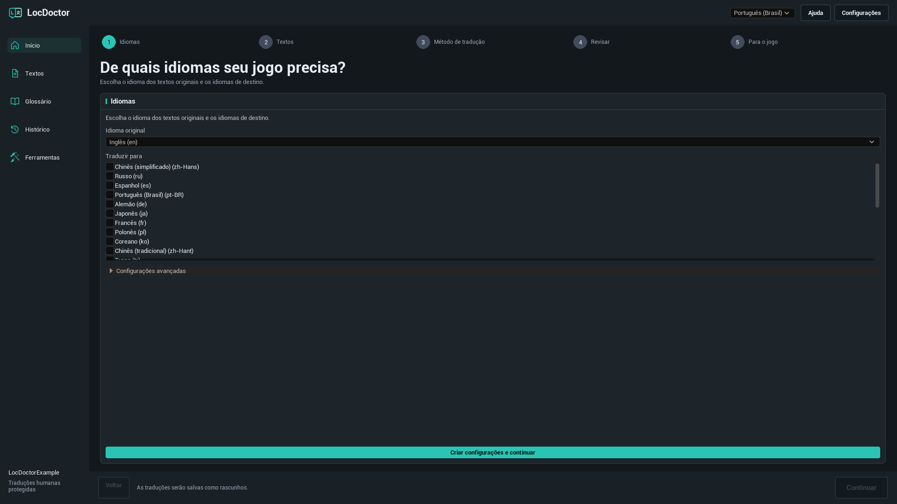
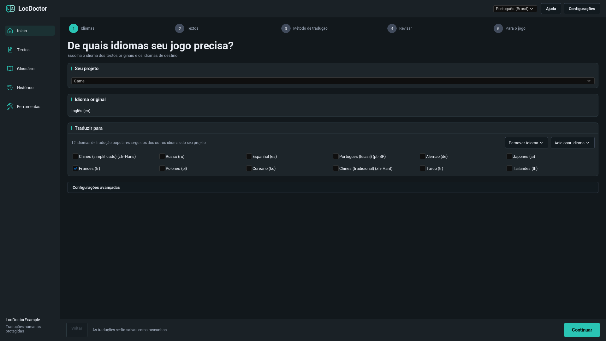
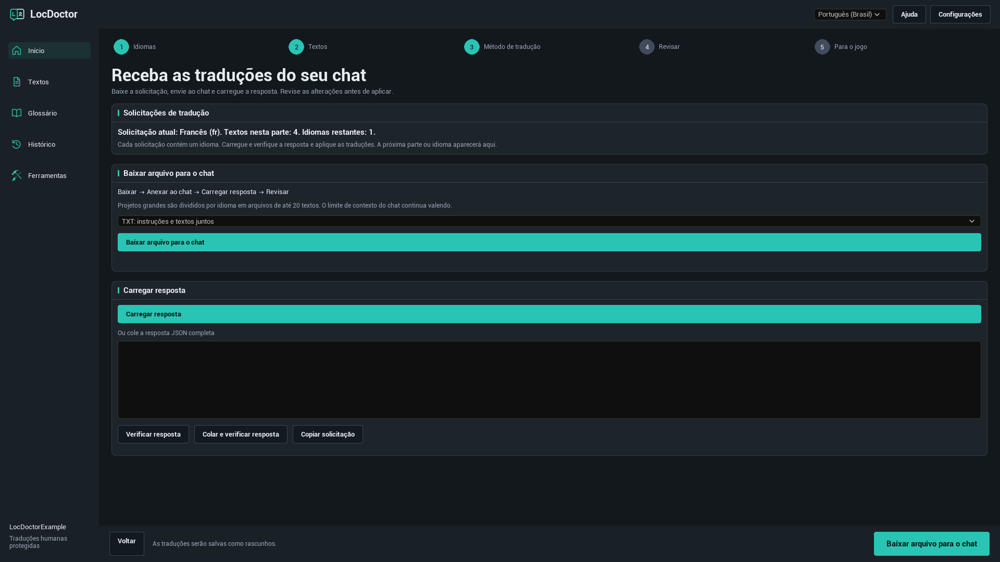
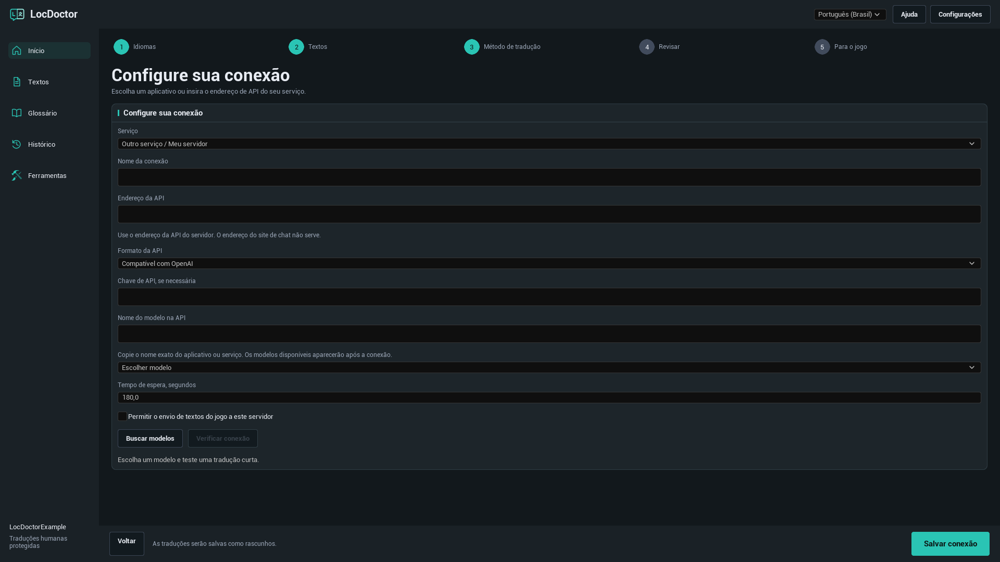
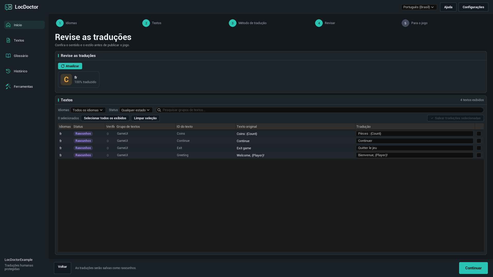
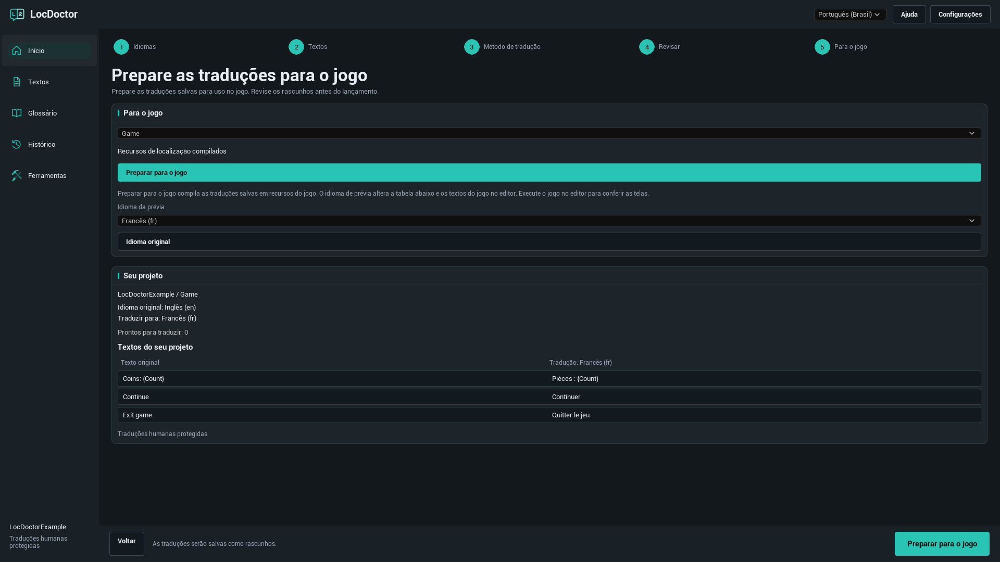

GUIA DO USUÁRIO DO LOCDOCTOR 1.0.0
Traduza seu jogo.
Tenha controle de cada palavra.
Traduza os textos do seu jogo na Unreal Engine com um modelo local, seu chat de IA ou um serviço de API. Revise os resultados no editor e prepare as traduções para o jogo.
Escolha o método que você já tem disponível
PRIMEIROS PASSOS
Instalação
O LocDoctor 1.0.0 é compatível com Unreal Engine 5.7 e 5.8 no Windows de 64 bits. Use o pacote correspondente à versão do seu motor.
Instalar pela Fab
Instale o plugin para a versão do seu motor pela biblioteca da Fab no Epic Games Launcher. Abra o projeto, ative LocDoctor em Edit > Plugins se necessário e reinicie o editor.
Instalar a partir de um ZIP
- Feche o Unreal Editor.
- Extraia o pacote para que
LocDoctor.upluginfique diretamente em<YourProject>/Plugins/LocDoctor/. Se o ZIP já contiver uma pastaLocDoctor, coloque-a dentro dePlugins. - Abra o projeto. Ative LocDoctor em Edit > Plugins se necessário e reinicie o editor.
- Abra Tools > LocDoctor.
YourProject/
YourProject.uproject
Plugins/
LocDoctor/
LocDoctor.uplugin
Resources/
Source/Um pacote com arquivos compilados também inclui a pasta Binaries. Se você usar um pacote apenas com código-fonte, a Unreal precisará de ferramentas de compilação C++ compatíveis para compilar os módulos do editor.
PRIMEIROS PASSOS
Sua primeira tradução
Comece com um idioma e poucos textos do jogo. Os nomes dos botões do plugin correspondem ao idioma deste guia. Os nomes dos menus do próprio Unreal Editor estão em inglês.
- Escolha os idiomas. Abra Tools > LocDoctor. Selecione o idioma dos textos originais do jogo e pelo menos um idioma de tradução. No primeiro uso, clique em Criar configurações e continuar. Mantenha os ajustes avançados padrão, a menos que o projeto precise de outra pasta de recursos ou outro alvo de localização.
- Colete os textos. Na etapa Textos, clique em Coletar textos. Salve os recursos do jogo alterados se a Unreal solicitar. Confira se o resumo do projeto contém os textos esperados.
- Escolha o método. Use No meu computador, No meu chat ou Por API. Para a tradução automática, selecione um modelo e clique em Verificar conexão. O teste traduz um texto curto. Após o sucesso, o botão principal muda para Traduzir textos.
- Revise o resultado. Traduções de IA são salvas como rascunhos. Na etapa Revisar, leia cada tradução, corrija se necessário e salve as linhas selecionadas.
- Prepare o jogo. Em Para o jogo, clique em Preparar para o jogo. Teste cada idioma no jogo e inclua todos nos ajustes de empacotamento.

Idiomas e textos do jogo
Idioma original, idiomas de tradução e idioma da interface
- Idioma original: o idioma em que os textos originais do jogo foram escritos.
- Traduzir para: os idiomas da tarefa de tradução atual. Desmarque um idioma para deixá-lo fora dessa tarefa.
- Idioma da interface: o seletor no topo do LocDoctor. Ele muda apenas a interface do plugin. O inglês é o idioma padrão.
Um alvo de localização, normalmente chamado Game, define a configuração de localização da Unreal para um conjunto de textos. Se houver vários alvos no projeto, escolha o que deseja traduzir.
Adicionar ou remover um idioma

As primeiras sugestões são 12 idiomas de tradução populares. Clique em Adicionar idioma para buscar outro idioma pelo nome ou código de cultura da Unreal. Remover idioma remove o idioma da configuração do alvo. Os arquivos de tradução são mantidos, permitindo adicionar o idioma novamente depois.
Quais textos podem ser traduzidos?
O LocDoctor trabalha com valores FText localizáveis e String Tables coletados pelo sistema de localização da Unreal. Valores comuns de FString e textos marcados como culture invariant não são localizáveis automaticamente. Procure esses casos em Ferramentas > Verificação do projeto.
MÉTODOS DE TRADUÇÃO
No meu computador
Use um modelo de texto baixado em um aplicativo no seu computador. O LocDoctor se conecta ao servidor API desse aplicativo. O plugin não instala aplicativos nem baixa modelos.
- Instale o aplicativo de sua preferência. Baixe um modelo de geração de texto que caiba na memória do computador e ofereça suporte aos idiomas necessários.
- Inicie o aplicativo e ative o servidor API local. Deixe-o aberto enquanto traduz.
- No LocDoctor, escolha No meu computador e depois Escolher modelo. Clique em Buscar modelos para atualizar a lista.
- Selecione um modelo. Se o teste ainda não começou, clique em Verificar conexão e aguarde a tradução curta de exemplo.
- Quando a conexão estiver pronta, clique em Traduzir textos.
Configurar o aplicativo local
| Aplicativo | O que iniciar | Endereço API padrão |
|---|---|---|
| Ollama | Abra o Ollama com um modelo de texto local baixado. O servidor local normalmente inicia com o aplicativo. | http://127.0.0.1:11434 |
| LM Studio | Abra Developer e inicie o servidor API. Disponibilize um modelo de texto para esse servidor. | http://127.0.0.1:1234/v1 |
| Jan | Abra Settings > Local API Server e inicie o servidor. Se ele exigir uma chave, informe a mesma chave no LocDoctor. | http://127.0.0.1:1337/v1O LocDoctor também verifica a porta 6767. |
| GPT4All | Abra Settings > Application > Advanced e ative Local API Server. Carregue um modelo de texto. | http://127.0.0.1:4891/v1 |
Se você alterou a porta, use o endereço exibido pelo aplicativo. O LocDoctor solicita as listas de modelos aos servidores locais e verifica as conexões locais salvas. Não precisa examinar seus discos nem conhecer a pasta de instalação.
Guias oficiais: OllamaLM StudioJanGPT4All
Outro aplicativo ou porta personalizada
Escolha Outro aplicativo ou Outro serviço / Meu servidor nos ajustes de conexão. Informe o Endereço da API, selecione Ollama ou Compatível com OpenAI como formato API e digite o nome exato do modelo. Servidores como llama.cpp, LocalAI e vLLM podem funcionar se o endpoint aceitar o formato selecionado.
MÉTODOS DE TRADUÇÃO
No meu chat
Use um chat de IA que aceite texto colado ou arquivos anexados. Você envia a solicitação e traz a resposta de volta ao LocDoctor. Esse método não precisa de chave de API.
- Escolha No meu chat. A indicação Solicitação atual ou Primeira solicitação mostra o idioma e a parte da solicitação atual.
- Clique em Baixar arquivo para o chat. Para a primeira tentativa, escolha TXT: instruções e textos juntos.
- Anexe o arquivo no seu chat de IA. Peça que siga as instruções incluídas e retorne a resposta completa com as traduções solicitadas.
- Clique em Carregar resposta para importar o arquivo de resposta. Você também pode colar a resposta JSON completa no campo correspondente e clicar em Verificar resposta, ou usar Colar e verificar resposta.
- Leia a prévia. Se todas as verificações passarem, clique em Aplicar traduções. As traduções serão salvas como rascunhos.
- Baixe ou copie a próxima solicitação e repita até não haver solicitações pendentes. Depois revise as traduções.
Qual formato de arquivo usar?

| Formato | Quando usar | O que anexar |
|---|---|---|
| TXT | Uma primeira tentativa simples. | Um arquivo com instruções e textos. |
| JSON | Um chat ou ferramenta que trabalhe bem com dados estruturados. | A solicitação JSON com suas instruções. |
| CSV | Uma tabela que você queira conferir ou compartilhar. | O CSV e seu arquivo separado de instruções. |
A resposta pode ser JSON, TXT com a resposta JSON completa ou CSV com as colunas batch, culture, i e t. Use Copiar solicitação se o chat não aceitar anexos. Enviar um arquivo não elimina os limites de contexto ou de envio do chat.
O que a verificação da resposta valida?
O LocDoctor verifica o identificador da solicitação, o idioma, os identificadores dos textos e os marcadores de formatação. Cada item solicitado deve aparecer exatamente uma vez. Os textos do jogo e o glossário ainda precisam corresponder à solicitação exportada.
Se você mudou o texto original, uma tradução ou o glossário após exportar, crie uma nova solicitação. Se a resposta estiver incompleta ou alterar um marcador, peça ao chat que a corrija. A solicitação ativa fica salva localmente no projeto, permitindo continuar após reabrir o editor.
MÉTODOS DE TRADUÇÃO
Por API
O LocDoctor envia as solicitações automaticamente ao serviço configurado. Crie uma chave de API na sua conta desse serviço e verifique a disponibilidade do modelo e a cobrança antes de começar.
- Escolha Por API. Selecione uma opção predefinida como OpenRouter, OpenAI, Google Gemini ou Groq.
- Abra Configurações avançadas. Informe sua Chave de API, se necessária. Para outro serviço, selecione Outro serviço / Meu servidor e digite o endereço API e o formato indicados na documentação do serviço.
- Clique em Buscar modelos e selecione um modelo. Se o serviço não fornecer uma lista, informe o Nome do modelo na API exato.
- Para um servidor fora deste computador, ative Permitir o envio de textos do jogo a este servidor.
- Clique em Verificar conexão e aguarde a tradução curta de teste. Quando funcionar, clique em Traduzir textos.
Conexão com um serviço personalizado

| Campo | O que informar |
|---|---|
| Nome da conexão | Um nome fácil de reconhecer, como Servidor de tradução da equipe. |
| Endereço da API | O endereço base documentado da API, por exemplo https://openrouter.ai/api/v1. O endereço de um site de chat não funciona aqui. |
| Formato API | Compatível com OpenAI para um endpoint Chat Completions compatível, ou Ollama para uma API Ollama. Formatos API não aceitos precisam de uma integração separada. |
| Chave de API | A chave fornecida pelo serviço ou servidor, se ele exigir. |
| Nome do modelo na API | O identificador exato esperado pelo servidor. O nome exibido em um site pode ser diferente. |
| Tempo de espera, segundos | Um valor entre 1 e 600. Aumente para um modelo ou servidor lento. |
As chaves de API são salvas nos ajustes locais de usuário, na pasta Saved/Config do projeto. Esses ajustes não são criptografados. As chaves não são incluídas nos arquivos de solicitação de chat, no histórico de tradução ou nos relatórios do LocDoctor.
REVISÃO E LANÇAMENTO
Revisar traduções
Traduções de IA começam como Rascunhos. As verificações automáticas ajudam a manter a formatação, mas você ainda precisa revisar o sentido, o tom e o contexto.
- Abra a etapa Revisar ou a página Textos. Clique em Atualizar se necessário.
- Use os filtros de idioma e status para reduzir a lista. A revisão guiada mostra os idiomas de tradução selecionados.
- Compare o original e a tradução. Corrija o campo de tradução quando necessário. Confira nomes, terminologia, marcadores, quebras de linha e problemas apontados.
- Selecione as linhas que deseja salvar e clique em Salvar traduções selecionadas.
- Confira as telas traduzidas no jogo antes do lançamento.
| Status | Significado |
|---|---|
| Sem tradução | Não há tradução salva para este texto e idioma. |
| Rascunhos | Uma tradução de IA foi salva e precisa de revisão. |
| Revisado | A tradução foi marcada como revisada. |
| Tradução humana | Uma tradução humana está protegida contra a substituição automática habitual. |
| Traduções desatualizadas | O texto original mudou depois da tradução. Compare a tradução com o texto atual. |
Entender o contador de progresso

O progresso conta pares de texto e idioma. Um texto original traduzido para quatro idiomas representa quatro tarefas. Processado indica quantas tarefas foram processadas. Confira os resultados salvos e as mensagens de erro para saber quais foram concluídas com sucesso.
Interromper a tradução automática mantém os resultados concluídos. Você pode retomar o trabalho restante quando a tarefa salva estiver disponível. As tarefas automáticas habituais protegem traduções humanas existentes.
Marcadores de formatação
Mantenha variáveis como {Player} e {Count}, tags Rich Text e quebras de linha. As solicitações de chat podem substituir a formatação por tokens protegidos, como ⟦LD0⟧. O modelo deve copiá-los exatamente. O LocDoctor restaura a formatação original ao aplicar uma resposta válida.
Expressões complexas de plural e gênero precisam de revisão manual. Traduza o texto de cada ramo sem alterar a estrutura da expressão.
Glossário e histórico
Mantenha uma terminologia consistente
- Abra Glossário e clique em Adicionar.
- Informe um termo. Escolha Não traduzir para manter um nome ou Tradução obrigatória para definir uma tradução exata.
- Defina as traduções para os idiomas necessários e ative a diferenciação entre maiúsculas e minúsculas quando apropriado.
- Clique em Salvar antes de preparar novas solicitações.
Por exemplo, preserve o nome de um personagem ou defina uma tradução consistente de um termo de jogo em cada idioma. O glossário é incluído nas novas solicitações. Mudá-lo pode invalidar uma solicitação de chat já exportada.
Restaurar uma alteração anterior
Abra Histórico, encontre o lote salvo pelo alvo, idioma e horário e clique em Restaurar. O LocDoctor verifica se há edições mais recentes antes de restaurar dados antigos. Se houver conflito, revise essas edições primeiro.
Se uma gravação foi interrompida, pode aparecer Restaurar alterações interrompidas na próxima abertura. Use Restaurar para recuperar os arquivos originais salvos antes de continuar.
REVISÃO E LANÇAMENTO
Preparar para o jogo
Esta etapa compila as traduções salvas em recursos de localização da Unreal. O jogo final usa esses recursos. A interface de editor do LocDoctor não é executada no jogo distribuído.
- Termine de revisar as traduções que farão parte do lançamento.
- Abra Para o jogo, selecione o alvo de localização e clique em Preparar para o jogo. Aguarde a mensagem Recursos de localização compilados.
- Selecione um Idioma da prévia. Isso atualiza o exemplo de texto do projeto e os textos localizados do jogo no editor. Execute o jogo no editor e confira suas telas.
- Clique em Idioma original para encerrar a prévia.
- Abra Project Settings > Packaging > Localizations to Package e inclua todos os idiomas que deseja lançar. Confira se os ajustes de internacionalização contêm os dados desses idiomas e teste uma versão empacotada.
Compile novamente após salvar novas traduções. Se um idioma funciona no editor, mas não no jogo empacotado, confira se seus recursos de localização e dados de cultura foram incluídos na compilação.

Se caracteres faltarem ou aparecerem como quadrados, abra Ferramentas > Fontes. Confira os recursos de fontes do jogo e as fontes alternativas para o idioma afetado.
Ferramentas e troca de arquivos
Verificação do projeto
Abra Ferramentas > Verificação do projeto e execute uma verificação. Confira os locais apontados: strings fixas no código, textos culture invariant, chaves em conflito ou frases montadas com fragmentos podem impedir a localização. A primeira verificação pode demorar mais enquanto a Unreal carrega recursos.
Fontes
Abra Ferramentas > Fontes para verificar se as fontes escolhidas contêm os caracteres das traduções. Confira caracteres ausentes e verificações incompletas e depois teste as telas reais do jogo.
Trabalhar com um tradutor
Abra Ferramentas > Importar e exportar para trocar traduções por arquivos CSV ou PO.
- Exporte o alvo e o idioma selecionados no formato necessário.
- O tradutor deve editar as traduções e preservar os identificadores dos textos, os valores originais e os marcadores.
- Importe o arquivo recebido e revise as alterações propostas.
- Resolva conflitos com Manter traduções do projeto ou Usar traduções do arquivo e clique em Salvar traduções importadas.
O CSV de solicitação de chat e o CSV de troca com tradutores servem a tarefas diferentes. Importe uma resposta de chat por No meu chat > Carregar resposta. Esta versão não oferece suporte a XLSX ou XLIFF.
Solução de problemas
O LocDoctor não aparece em Tools
Procure e ative LocDoctor em Edit > Plugins e reinicie o editor. Se não aparecer na lista de plugins, confira a pasta de instalação e o pacote para a versão do motor. Para um pacote apenas com código-fonte, instale as ferramentas C++ compatíveis com a Unreal e compile o alvo do editor.
Nenhum texto foi coletado
Salve os recursos do jogo, confira a pasta de coleta do alvo e colete novamente. Os textos devem ser FText localizáveis ou String Tables incluídos na configuração de coleta da Unreal. Execute Ferramentas > Verificação do projeto para encontrar strings fixas e textos não localizáveis.
A tradução de textos não está disponível
Escolha pelo menos um idioma de tradução e colete os textos. Para métodos automáticos, selecione um modelo e conclua Verificar conexão primeiro. Se não há textos pendentes, edite as traduções existentes em Textos ou colete novos textos e selecione outro idioma.
A lista de modelos locais está vazia
Deixe o aplicativo aberto, ative seu servidor API local e instale ou carregue um modelo de texto. Confira o endereço API e a porta. Para um servidor personalizado, informe o nome exato do modelo nos ajustes avançados. Ter o aplicativo instalado não significa que o servidor API está ativo.
O teste de conexão excede o tempo limite
Dê tempo para o modelo local carregar, feche outros aplicativos que usam memória de vídeo ou escolha um modelo menor. Aumente Tempo de espera, segundos. Se o servidor nunca responde, confira endereço, porta e se um proxy do sistema redireciona solicitações localhost.
A API retorna 401 ou 403
Confira se a chave pertence ao serviço escolhido, ainda é válida e permite acesso ao modelo. Para um servidor local com autenticação, use a chave dos ajustes do servidor API do aplicativo.
A API retorna 429 ou um erro de modelo
Aguarde antes de tentar novamente ou escolha outro modelo disponível. Confira os limites da conta e a disponibilidade do modelo no serviço. Receber a lista de modelos não garante que o serviço consiga traduzir.
A solicitação de chat contém apenas um dos meus idiomas
Isso é esperado. Cada solicitação contém um idioma e até 20 textos. Carregue, verifique e aplique a resposta e prepare a próxima solicitação. O idioma atual ou seguinte aparece acima dos controles de arquivos.
Minha resposta do chat foi recusada
Use a resposta completa da solicitação ativa. Peça ao chat que retorne cada item exatamente uma vez, preserve os valores batch e culture e mantenha todos os marcadores. Se você alterou textos do projeto ou o glossário após exportar, crie uma nova solicitação.
Mudar o idioma da prévia não muda o jogo
Salve as traduções e clique em Preparar para o jogo primeiro. Confira se o alvo escolhido contém traduções no idioma da prévia. A prévia afeta os textos localizados do jogo, não os menus do Unreal Editor. Strings comuns e textos não coletados não mudam.
Um idioma está ausente no jogo empacotado
Compile as últimas traduções salvas. Inclua o idioma em Project Settings > Packaging > Localizations to Package e use ajustes de internacionalização com seus dados de cultura. Teste uma nova versão empacotada.
Os caracteres traduzidos aparecem como quadrados
Confira a fonte do jogo e suas fontes alternativas para o idioma afetado. Use Ferramentas > Fontes para verificar a cobertura de caracteres e teste os widgets e telas reais do jogo.
Perguntas frequentes
Preciso de uma assinatura de IA paga?
O LocDoctor não inclui assinatura. Use um modelo local, seu próprio acesso ao chat ou a API do serviço escolhido. A disponibilidade, os limites e as cobranças dependem do aplicativo ou serviço usado.
A tradução local funciona sem internet?
Sim, com um modelo já baixado que funcione localmente. Você pode precisar de internet para baixar o aplicativo e o modelo. Um modelo hospedado na nuvem continua usando seu provedor, mesmo que o aplicativo esteja no seu computador.
O LocDoctor traduz imagens, voz ou legendas de vídeo?
Ele traduz textos localizáveis do jogo coletados pela Unreal. Texto em imagens, áudio e legendas de vídeo precisam dos próprios textos originais e de um tratamento separado.
Remover um idioma apaga suas traduções?
Não. Remover idioma remove o idioma da configuração do alvo e mantém os arquivos de tradução. Desmarcar o idioma apenas o exclui da tarefa atual.
Quais idiomas de interface estão disponíveis?
Inglês, russo, alemão, francês, espanhol, português do Brasil, chinês simplificado, japonês e coreano. Os idiomas de tradução do jogo são configurados separadamente.
O jogo lançado precisa do LocDoctor ou de conexão com uma IA?
O plugin é usado no Unreal Editor. O jogo final usa os recursos de localização compilados da Unreal. Para jogar, não é preciso o modelo de tradução nem o serviço.
Versão e suporte
Este guia corresponde ao LocDoctor 1.0.0 para Unreal Engine 5.7 e 5.8 no Windows de 64 bits.
1.0.0
Tradução de textos do jogo por modelos locais, arquivos de chat e APIs compatíveis. Configuração de idiomas, revisão de rascunhos, glossário, histórico, compilação de localização, verificações do projeto e de fontes, troca CSV / PO.
Como relatar um problema
Entre em contato com o suporte: nexusforgeuesupport@gmail.com.
Informe as versões da Unreal Engine e do LocDoctor, o método de tradução e a mensagem de erro exata. Para problemas de conexão, inclua o nome do aplicativo ou serviço e do modelo. Uma captura em tamanho completo ajuda a mostrar a etapa atual.
Remova chaves de API e outras informações privadas das capturas e registros antes de compartilhá-los.